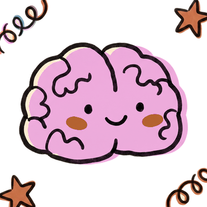
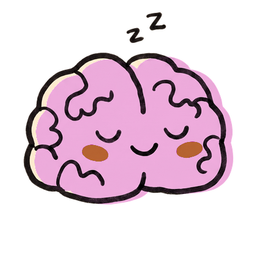
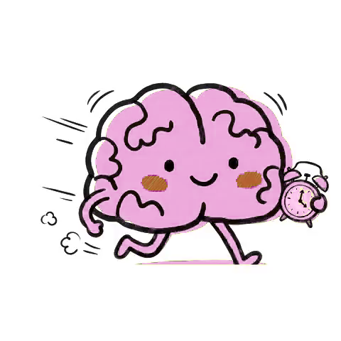
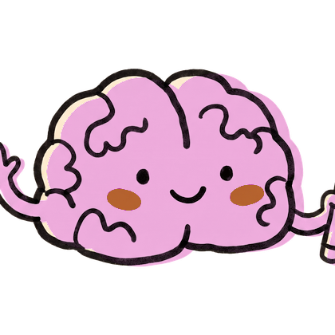
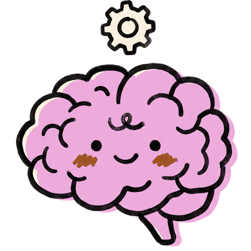
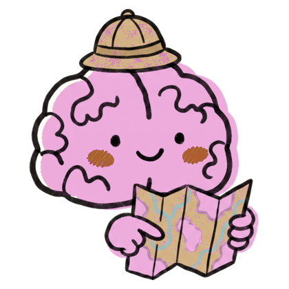
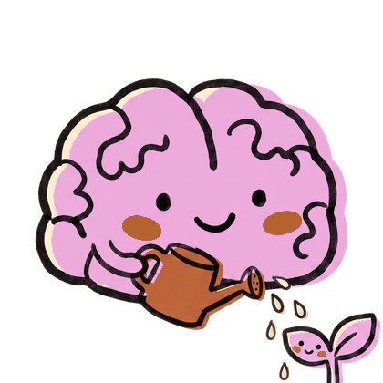
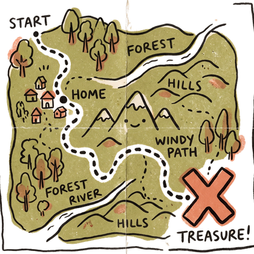
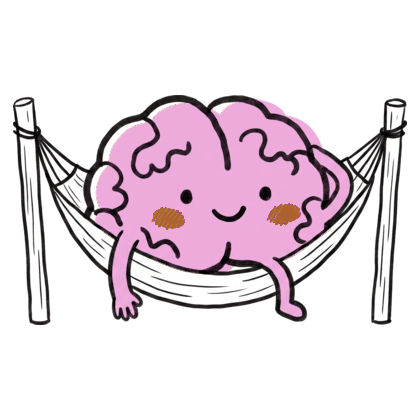

A second brain for your life admin: plain text files, a page that renders them, and Claude Code doing the filing so you never have to.

Three doable things, written before you're up, fitted around your calendar and the weather where you actually are.

Every project and promise in one ranked list. Whatever has gone stale or overdue sits at the top.

Who you owe a reply, who has gone quiet, whose birthday is near. Friends get the same care as projects.
It writes the email or the message. Sending is a button only you press.

A line typed on the page, a text to your own Telegram bot, or a voice note it types up for you.
Point it at the folders you already work in and their to-do lists join the page, re-read every twenty minutes.

Give a task a deadline and a rough size, and the week says what fits, what has to move, and what will be late whatever you do.
The news you actually follow, from outlets you pick — with the jargon explained, for the fields you are learning.

Weekly counts instead of streaks, finish lines with dates, and a bucket list for this stretch of your life.

Everything drawn as one picture: by deadline, by area of your life, or by how close someone is.
Also in there: a journal kept in your own words, a night shift that runs the heavy jobs at 1am, a notes room per project, a sketch of the coming week each Sunday, and six looks for the page if the first one isn't yours.
